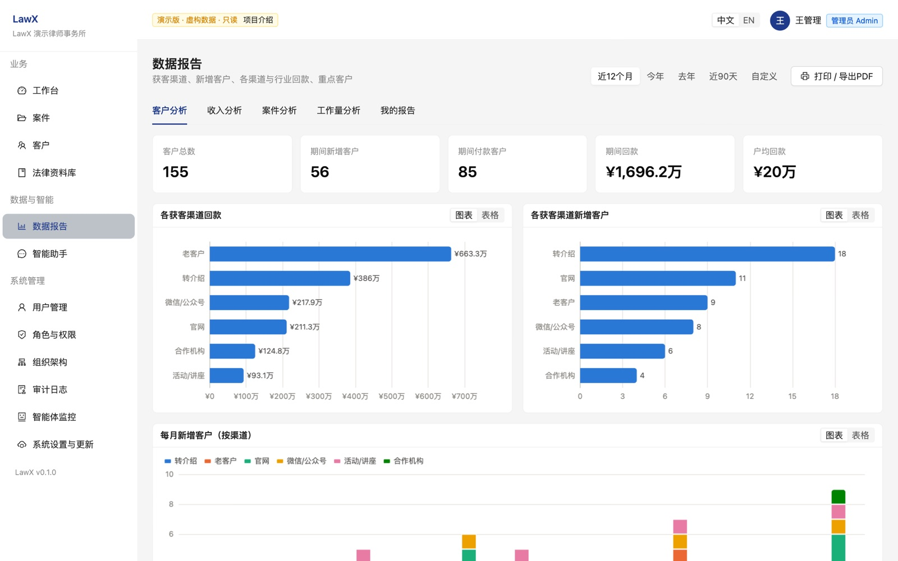
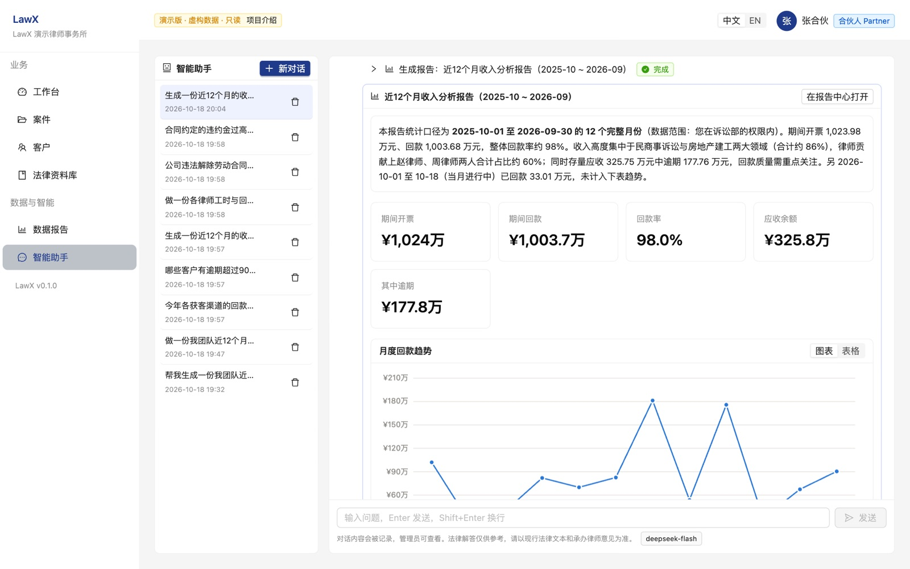
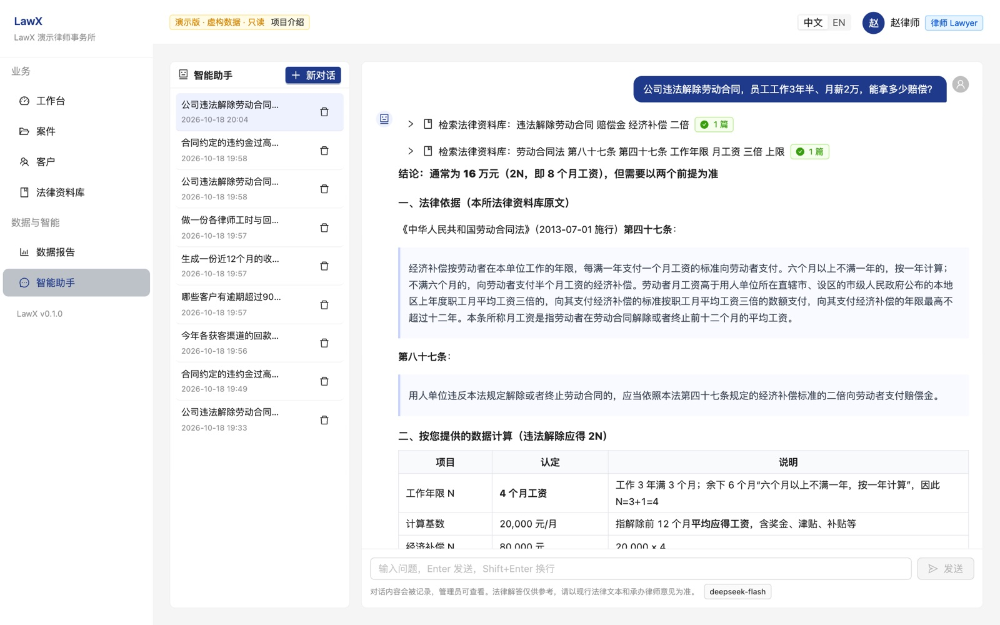
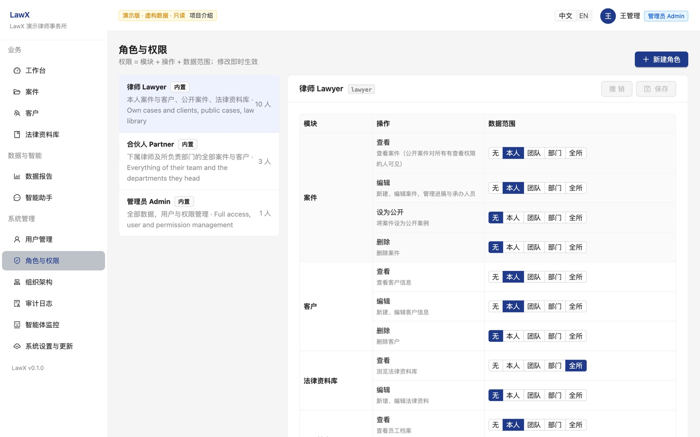

LawX is an office system for small and mid-size law firms: cases, clients, billing, time and a law library, with standard business reports and an AI assistant that analyses the firm's database, builds reports with charts and answers legal questions. Every query runs as the person asking: a lawyer sees their own matters, a partner their team, management the whole firm — enforced in the database itself.
Demo runs in your browser on fictional data; pick admin, partner or lawyer at login.
Small firms run on spreadsheets and chat groups. Partners can't see the business; generic AI can't be trusted with client data.
Matters, fee agreements, invoices and time live in different files; nobody knows collection rates or which client channels pay off.
A lawyer may only see their own clients; partners their team; salaries only HR and the person. Any tool must respect that — including AI.
Pasting firm data into a chatbot leaks it and returns unverifiable numbers. Firms need answers grounded in their own database, with an audit trail.
One web app, Chinese and English, for lawyers, partners and administrators.
Cases with teams and events, clients with acquisition channel, fee agreements (fixed, hourly, contingency, mixed), invoices, payments, time entries, law library.
Client analysis, revenue & receivables aging, case pipeline & outcomes, workload — any period, scoped to the viewer, printable to PDF.
Ask in plain language; it queries the database, builds custom reports with charts, or answers legal questions citing the firm's library.




A permission is resource + action + scope. Scopes follow the firm's structure; PostgreSQL row-level security filters every query, from the web UI or the assistant.
| Scope | Meaning | Typical holder |
|---|---|---|
| own | records linked to me (my cases, my clients, my time) | lawyer |
| team | me + everyone reporting to me | partner |
| department | team + everyone in departments I head | department head |
| all | firm-wide | management / admin |
Create a “paralegal” or “finance” role in the admin console; per-user overrides raise or revoke single rights.
Salaries visible only to the person and admins; public reference cases hide the client; password hashes unreadable by the app.
Every change, sign-in, salary view and assistant query is logged with before/after values.
An LLM with four tools — all executed as the user, all logged.
Writes one SELECT over curated, column-trimmed views. Results are already filtered to the user's scope.
Uses the firm's vetted report definitions when the question matches one.
Grounds legal answers in the firm's statutes, interpretations and precedents.
Builds a report with KPIs, charts and tables; incomplete reports are rejected and fixed, never half-saved.
The model only receives what the user's own questions retrieve. Any OpenAI-compatible LLM works — DeepSeek, Qwen, GLM, Kimi, or a local model for on-premise sites. Administrators review every conversation in the agent monitor, with blocked attempts flagged.
Each firm gets its own database in both — hard isolation and trivial export.
| Cloud (SaaS) | On-premise | |
|---|---|---|
| Hosting | central server, one database per firm | the firm's own server, its own data |
| Setup | sign-up | one-command install, then a setup wizard in the browser |
| Updates | continuous, by us | one click in the admin UI: database backup → build → health check → automatic rollback |
| AI model | hosted LLM, metered per firm | firm's own API key, or a local model |